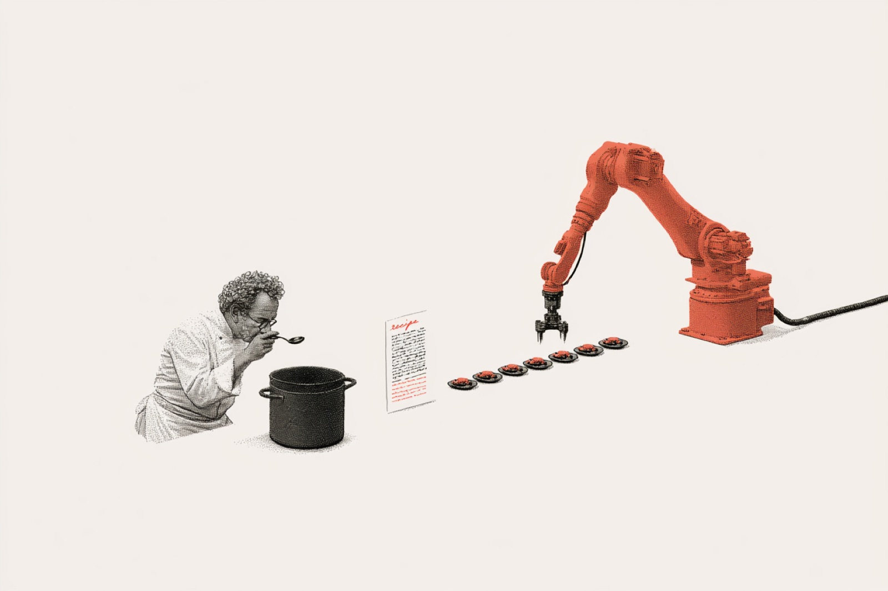

Teams are shipping internal tools faster than ever, and the interfaces all look subtly off. The reflex is to blame the model's taste. The real problem is constraints, and where they now need to live.

Every team is shipping internal tools faster than ever. Dashboards, agent interfaces, admin panels, things that used to take a quarter are out in a week. And all the interfaces look off.
Not broken, and not ugly in any obvious way. Just incoherent. The nav border-radius doesn't match the cards, the empty state has no copy, the loading spinner turns up in a different corner on every screen. The spacing has no rhythm. The whole thing feels like it was assembled from parts that were never meant to go together, because it was.
The obvious read is that AI has bad design taste. That it can write a loop but can't feel visual hierarchy, that some aesthetic sense is missing from the model that only comes from years of design training.
It's an easy conclusion to reach, and it leads directly to the wrong fix: more designer review, more QA cycles, more human time at the back of the pipeline catching what the AI got wrong. I've watched teams try this. The review queue grows, the UI gets marginally less inconsistent, and the underlying pattern doesn't change.
When you ask an LLM to build a component, it draws on everything it's seen, thousands of codebases, UI libraries, design patterns, and produces something that works. It compiles, it renders, it does the thing. But it won't produce something that belongs in your product, because it has no idea what your product is. It's never seen your token system, doesn't know your spacing scale, has read no spec about what a card looks like in your world or what a destructive action should feel like.
So it improvises, and improvisation at scale is exactly what incoherent UI looks like.
Run the same prompt with constraints, a token system, a component library, hard rules about spacing and radius and interaction states, and you get consistent, coherent design every time, because the model is following rules, which is what LLMs are genuinely good at.
Design consistency was never really a taste problem. It was always a constraint problem. Humans encoded the constraints in their heads, in their style guides, in the implicit knowledge that builds up when a designer and an engineer work together long enough. The model has none of that, so nothing carries over.
Knowing that, the question becomes: where do the constraints live?
The constraint system used to live in Figma. Then someone built a Storybook. Then a Notion doc. Then a Confluence page that nobody updated after Q2. All of those have the same problem: the LLM never read any of them. They exist outside the loop.
The LLM reads what's in its context, so the design spec needs to live in the context, written as rules, with token examples, with explicit anti-patterns, with enough precision that the model has no room to improvise.
Concretely, this means a text file that lives alongside the code, not a visual reference or a doc in another tab. A structured set of constraints that the model ingests before it generates anything, and shapes every component it produces.
It's a different artifact than a design system, and writing it is a different skill than making a Figma file. You need to know what to constrain and what to leave open. Too loose and the model improvises, too rigid and it can't adapt when the product changes. Specific enough to produce coherence, flexible enough to survive. That's a design problem. It just looks like a writing problem now.
If you're a designer, this is worth sitting with: the most important design work happening at startups right now isn't in Figma. It's in the spec that gets fed to the model. Whoever writes that spec is setting the visual language for everything the team ships. Every component, every screen, every internal tool.
Product and engineering leaders should care about this too. If nobody on your team has written a proper constraint spec for your LLM-generated UI, your design debt is accumulating invisibly. The code ships clean but the product feels incoherent, and adoption of internal tools stays low because nobody can quite explain why they're slightly unpleasant to use.
Adding review at the back doesn't fix a constraints problem. It just makes you feel like you're managing it.
What changed is the artifact, not the discipline. You still need someone who thinks clearly about consistency, hierarchy and constraint. That person's job just got more legible to the engineers and product managers they work with, because the output is no longer a screen in Figma that someone else has to interpret. It's a file that determines what every screen looks like, including the ones you haven't built yet.
That's a larger surface area than most designers have ever had.
The teams whose tools still feel coherent a year from now won't be the ones with the best taste. They'll be the ones who wrote it down.